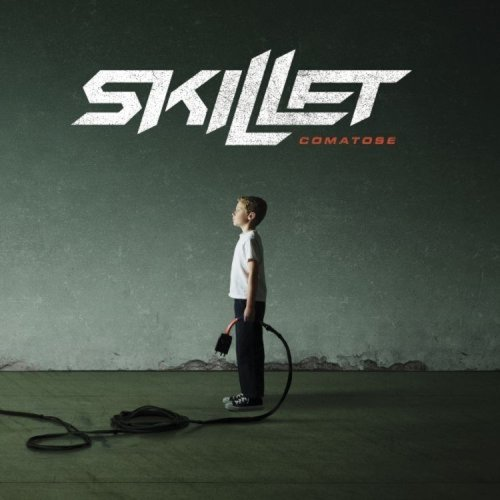

Comatose ist das sechste Studioalbum der US-amerikanischen christlichen Rockband Skillet. Dieses Album, das am 3. Oktober 2006 von Lava Records, Ardent Records und Atlantic Records veröffentlicht wurde, setzte einen ähnlichen Musikstil fort, der von ihrem 2003er Album Collide geprägt wurde, nämlich die Keyboard-Elemente, die in früheren Veröffentlichungen vorherrschend waren, zugunsten verzerrter Gitarren herunterzuspielen und mehr auf orchestrale Elemente zu setzen. Comatose wurde am 3. November 2009 von der Recording Industry Association of America (RIAA) mit Gold ausgezeichnet, ihr erstes Album, das dies tat, und hat seitdem Platin erhalten und bis zum 20. Mai 2016 über 1.000.000 Exemplare verkauft. Eine Deluxe-Edition des Albums wurde am 26. Dezember 2007 veröffentlicht und eine Live-DVD ihrer Headliner-Tour zur Unterstützung des Albums wurde im Herbst 2008 veröffentlicht. Comatose wurde bei den 50. jährlichen Grammy Awards am 10. Februar 2008 in der Kategorie "Best Rock or Rap Gospel Album" nominiert.
